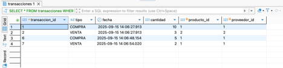

Objetivo del Proyecto
Este proyecto consistió en diseñar y desarrollar un sistema de gestión de inventario usando PostgreSQL, aplicando conceptos como claves primarias/foráneas, normalización hasta 3FN, transacciones SQL, y más.
Modelo Entidad-Relación

Diagrama ERD que representa las relaciones entre productos, proveedores y transacciones.
Estructura de Tablas en PostgreSQL

Tablas relacionales implementadas con claves primarias y foráneas, restricciones, tipos de datos y relaciones.
Registro de Transacciones

Las transacciones registran compras y ventas, actualizando automáticamente el inventario con triggers.
Consultas SQL

Consultas básicas y avanzadas usando SELECT, JOIN, GROUP BY, subqueries y funciones agregadas.
Normalización
Las tablas fueron diseñadas para cumplir con la Tercera Forma Normal (3FN), eliminando redundancias y asegurando integridad.
Conclusión Personal
Este proyecto me permitió aplicar en un contexto real lo aprendido sobre bases de datos. Implementé modelos, consultas, triggers y transacciones para crear un sistema funcional y bien estructurado.